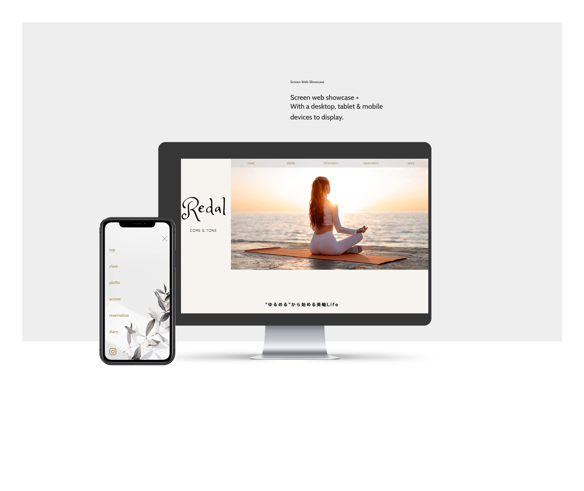
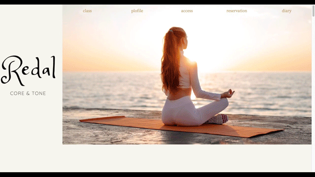

URL
http://kawano2022.starfree.jp/redal-ami/
概要
姿勢矯正トレーニング・パーソナルダイエットサロンのサイトリニューアル
担当範囲
企画・デザイン・コーディング
サイトの目的
サービスの認知と新規クライアントの獲得
ターゲットの選定
時間とお金に余裕があり、体に悩みを抱えている30代〜50代の女性。
ポイント
知人でもあるクライアントから頂いたデータを元に、ホームページをリニューアルする。ユーザー目線のページを作成し、PC・スマートフォンと２つのデバイス用に２種類のサイズに対応させる。
またクライアントのInstaglam及びLINEのリンクを紐付けSNSでの予約制度の効率性を向上させ、集客をはかる。
デザインについて
30～50代というターゲット層から、あまり幼くならないようナチュラルカラー(ベージュやホワイト)を多く使い,大人の女性らしさと柔らかなイメージを連想させ、安らぎと優しげな空間作りに努める。
現在のHPにも使用されているオリジナルのロゴマークも引きつぎ、２カラムで左側に常に配置することで、親しみやすさと認知度の向上を測る。左側にスペースを置くことで全体的に伸び伸びとした広さとリラックス感のあるレイアウトに仕上げた。
制作期間
２ヶ月
使用ツール
php,Photoshop,figma